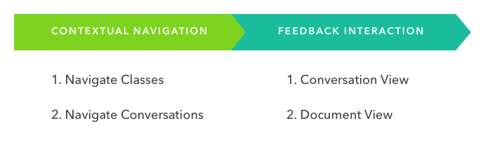
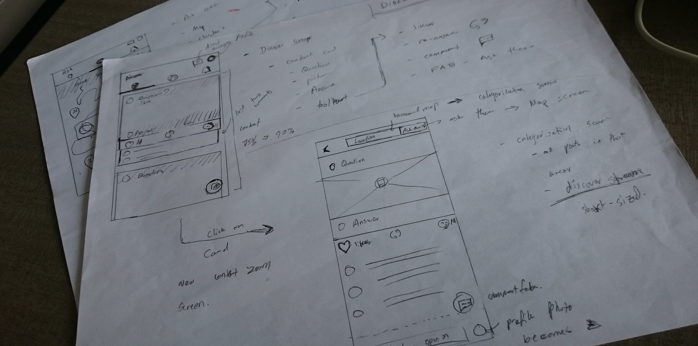
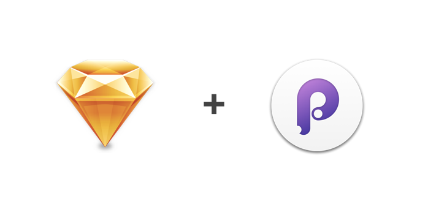
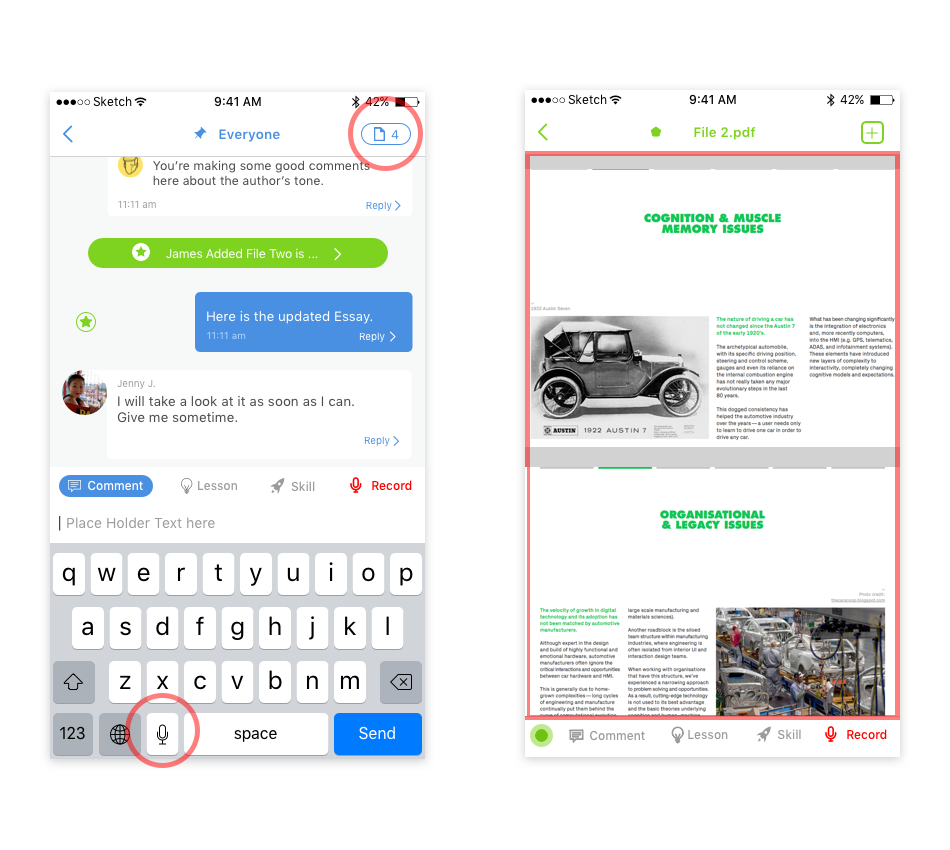
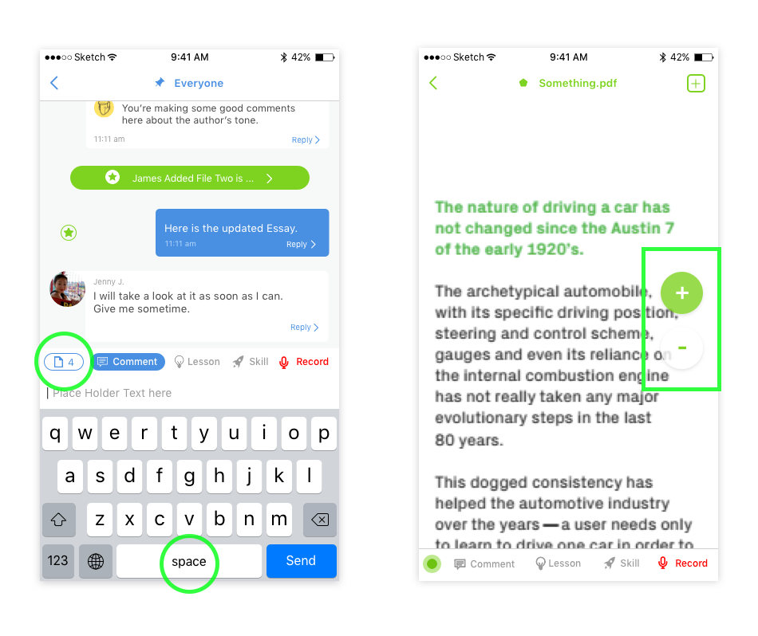
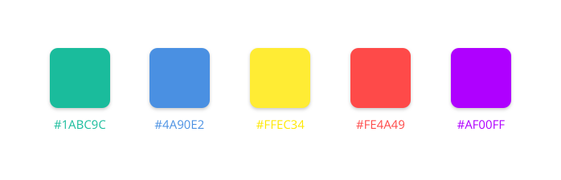

Intro
Kaizena is an education platform designed to improve learning outcomes by connecting students with personal, high quality feedback from their teachers, quickly. Teachers using Kaizena can give targeted feedback on student work, and track student abilities and progress, without the traditional assessment based grading system. This ensures the feedback used is to improve skills and abilities of the student, rather than concentrating on a final grade. A novel, but rather important shift that Kaizena is spearheading in the Edtech space.
After raising a seed round, the Kaizena team decided to increase the accessibility of the platform by building a mobile Kaizena experience for iOS devices.
I was brought in to collaborate with Kaizena’s development team and help build the first mobile iOS application.
Role
Mobile UX & Product Designer
The Challenge
As an already established platform, Kaizena has a certain set of core functionalities and flows that were expected by students and teachers who use the platform. The challenge or goal would be rethinking the platform in a mobile setting, while still providing the same core experience expected by teachers and students already using Kaizena, as well as new prospective teachers and students.
The Methodology
To make sure Kaizena on mobile is solving the same problems the platform is solving, a methodology with clear goals and evaluation methods was a requirement. By setting these goals and methods, the design process is guided by the needs of teachers and students.
As a psychology student, using the scientific method as a basis for UX design seems like a natural transition. The scientific method within the context of UX design can be divided into three core categories: strategy, experimentation and execution. Within these categories, differing factors are explored and tested depending on the project.
Using this methodology, I can quickly move through different phases of design, all the while making sure the work is meeting the goals of the project.
The Observations
I spent a couple of days using Kaizena, and talking with the engineering team on a technical level. I wanted to know learn as much as I could about the platform and the reasoning behind the design and engineering decisions made so far. I also made sure to ask as many questions as I could about their conversations with teachers and students, the insights they gained in the process, and how these conversations shaped the platform. During this process, the most important question were all proceeded with “why.” These questions allowed me to truly understand Kaizena as a platform, and the team behind it.
The Ideation
As my understanding of the platform grew, a few key principles and insights became clear. These, after much discussion with the Kaizena team, became the ultimate goals and success metrics of the mobile app design and development.
The goals:
- One App for All: Many of the apps in the edtech space put up a wall between students and teachers by providing them completely different apps. This is not ideal, as teachers may need to demonstrate the app to their students, and if it’s a different app entirely, it confuses teachers and students. The one app for all removes this limitation entirely, decreases development time and creates a cohesive experience across the entire Kaizena platform.
- Contextually quick navigation: Using real life mental models to contextually cluster information to make navigation as quick as possible. For example, grouping students into classrooms, and organizing documents within the conversations between teachers and students, removing the need for file management. This was a platform wide change.
- Faster Feedback: Easy to browse documents, quick highlights and voice comments decreased time spent on each document by 40% on the Kaizena platform. Reimagining these specific functionalities on mobile, and designing with iOS in mind became a priority.
- Easy sorting: Teachers still require certain sorting capabilities in the mindset of the classrooms. These sorting methods are related to due dates, response times, and acknowledged feedback / replies.
The UX Flows
With the previously mentioned goals in mind, and much discussion, multiple UX flows were created and discussed. Through this discussion, a single UX flow was chosen as the primary flow, and was adopted platform wide.

Teachers and students would contextually navigate the app like a real classroom or subject, and find the conversation they are assigned to. From there, the student is able to converse with the teacher and other students, and share documents within the conversation.
Using this UX flow, all the data models available were categorized and organized using the object-oriented design method. This process organized the functionality and metadata in a logical, hierarchical manner for each step of the UX flow.
The Wireframing
To begin, an entire flow is sketched or drawn out on a whiteboard from beginning to end, using the UX flow as the bases for the design. This flow is then discussed with development team for feedback and optimization. This process is then repeated until the wireframe is considered complete (that’s when the team doesn’t have anymore possible feedback). This was an ongoing effort by myself and the engineering team, making sure we were all on the same page as development on the platform and on mobile continued.

Transferring the design ideas and thoughts to a digital medium, where they will ultimately will be used by the intended user, needs to be as seamless as possible. For this process, my preferred tools are Sketch and Principle.

The Prototype
Using these tools, multiple designs are iterated upon until a full flow is made. This flow is then expanded upon again in the form of interaction states, elements and animations. This ensures the app is not simply page swipes, but a fully designed app, with multiple functions that help students and teachers achieve their goals.
All these differing interactive states and elements are combined within the UX flow to create a cohesive prototype. I was then able to sit down with Kevin (Kaizena's iOS developer), and create a fully functional prototype of the application.
We were now ready for some teacher and student interviews.
The User Interviews
In order to maximize the benefits of the UX interviews, a task based script was created in order to test some of the assumptions made when designing the app. Using this process, any specific deviations from the flow can be immediately identified by the interviewer. Three major problems in the design were found.
Here is what we discovered:
- Ignored Focal points: Teachers spent much more time interpreting functionality, while students felt comfortable experimenting with the app. The points of hesitation the teachers demonstrated allowed us to find certain focal points on screen that seem to be completely ignored, but still have important functionality. For example, not finding the documents list button when in the top bar, but using all functionality found in the bottom bar.
- Document View Resizing: We very quickly learned that pinch to zoom is not something easily identified. With no cue available, teachers and students would try to read documents in their shrunk format, which is nearly impossible.
- iOS dictation vs Kaizena Voice Comments: Sometimes, teachers and students who want to use the voice comment feature end up using the iOS dictation button instead, which essentially turns the voice comment into a typed comment.

These UX problems took us back to the drawing board, and multiple parts of the app were redesigned to fix some of the challenges observed by the teachers and students.
- Ignored Focal points: rearranging items of interactivity into just the bottom bar seemed to focus all functionality to a single area. After testing, teachers immediately understood the functionality locations, and were actually able to find the functions to use.
- Document View Resizing: By adding a simple +/- toggle into the document view, teachers were able to find and use the toggle to zoom into the document, and actually be able to read the content of the document.
- iOS dictation vs Kaizena Voice Comments: This was a simple fix. By creating a custom keyboard view, the iOS dictation button was removed from the main keyboard view, and the Kaizena voice comments became the primary choice for voice dictation.

The Visual Design
When the team and I were satisfied with the results of the first build of the app, the visual design became the final goal of the design process before the holiday break. In order to make sure the design reflected Kaizena’s core experience and branding guidelines, a primary color system was created, with a heavy reliance on whitespace to provide breathing room for the content.

The color palette was based on basic RGB color space, as it emanated the feeling of primary colors, which is usually associated with education. This color space also provided the contrast necessary to separate content from User Interface elements, making content abundantly clear. The increased use of whitespace also increased the vibrant, open theme of the app, which helps set the tone of feedback in a more positive, and light manner.
The app finally came together. You can download Kaizena for iOS here.
The Conclusion
As we were finishing up work on the app, and the Kaizena team was getting ready to move to San Francisco, it felt like a time of reflection.
Kaizena provided me with many firsts. It was the first mobile app I worked on, the first time working with a team for extended periods of time, first time I had to iteratively design with others, and the first time I conducted a formal UX interview process. For all of these firsts, I felt very thankful. The amount of learning that occurred with the Kaizena team has definitely attributed to my growth as a designer.
Final Notes
I was given the chance to contribute to the web platform on a regular basis, which aligned the mobile and web experience together. I also worked on the landing page design and copy, as well as some of the onboarding design that was not shown in this case study. This case study represents a small overall portion of total design work and strategy.
Acknowledgments
A special thank you to Edward, Max, Bryan, Kevin and Abdul. This was a team effort, and I'm glad I was a part of it. Special thanks to Bryan for the job lead.